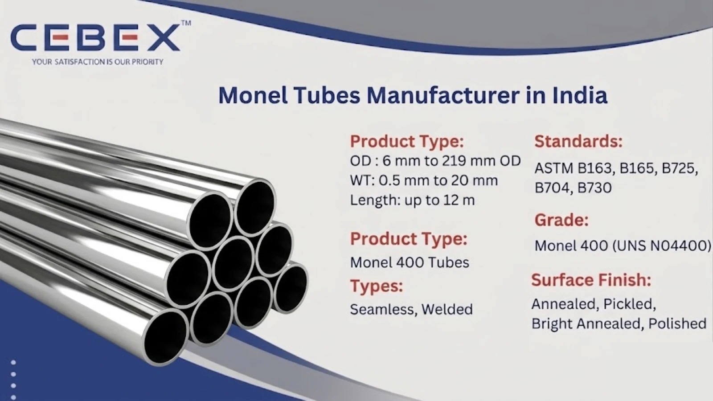

Leading Manufacturer & Exporter of Monel 400 Tubes
In industries where corrosion resistance and durability are critical, material selection plays a vital role in system performance. As a leading Monel 400 Tube Manufacturer in India, CEBEX STEEL INDIA supplies high-quality Monel 400 tubes engineered for superior resistance to seawater, acids, and extreme environments.
Monel 400 is a nickel-copper alloy known for its excellent resistance to corrosion in marine and chemical environments. It offers high strength, good weldability, and exceptional performance across a wide temperature range. These properties make Monel 400 tubes ideal for applications in marine engineering, chemical processing, oil & gas, and power generation industries.
We manufacture Monel 400 seamless and welded tubes in compliance with international standards such as ASTM, ASME, DIN, and EN, ensuring reliability and global acceptance.

Selecting a reliable Monel 400 Tube Manufacturer in India is essential for ensuring long-term performance and safety. CEBEX STEEL INDIA is recognized for its technical expertise, strict quality control, and global supply capability.
We are ISO 9001:2015 certified and follow rigorous inspection procedures. Each tube undergoes testing such as PMI (Positive Material Identification), hydrostatic testing, ultrasonic testing, eddy current testing, and mechanical testing.
All products are fully traceable and supplied with EN 10204 3.1 / 3.2 Mill Test Certificates along with inspection reports. Our export team ensures secure packaging and timely delivery for global projects.
Our Monel 400 tubes are manufactured using high-quality raw materials and advanced production processes.
| Feature | Specification / Detail |
|---|---|
| Product Type | Monel 400 Tubes |
| Standards | ASTM B163, B165, B725, B730 |
| Types | Seamless, Welded |
| Grade | Monel 400 (UNS N04400) |
| Size Range | 6 mm OD to 219 mm OD |
| Thickness | 0.5 mm to 20 mm |
| Surface Finish | Annealed, Pickled, Bright Annealed, Polished |
We manufacture a wide range of Monel 400 tubes designed for various industrial applications. Seamless tubes are preferred for high-pressure systems due to their superior strength and uniform structure, while welded tubes are suitable for larger diameter and cost-effective applications.
Our product range includes heat exchanger tubes, condenser tubes, boiler tubes, instrumentation tubes, and custom tubes manufactured as per client specifications.
Monel 400 is a versatile alloy widely used for its corrosion resistance and mechanical strength.
| Grade | Common Name | Typical Applications |
|---|---|---|
| UNS N04400 | Monel 400 | Marine engineering, chemical processing, oil & gas, heat exchangers |
| Category | Standards |
|---|---|
| Tube Standards | ASTM B163, B165, B725, B730 |
| ASME Standards | ASME SB163, SB165 |
| International Standards | DIN, EN, ISO |
Monel 400 tubes provide excellent mechanical strength and corrosion resistance, especially in seawater and acidic environments.
| Element | Composition |
|---|---|
| Nickel (Ni) | 63 min |
| Copper (Cu) | 28–34 |
| Iron (Fe) | 2.5 max |
| Manganese (Mn) | 2.0 max |
| Carbon (C) | 0.3 max |
| Silicon (Si) | 0.5 max |
| Property | Value |
|---|---|
| Tensile Strength | 550 MPa |
| Yield Strength | 240 MPa |
| Elongation | 35% |
| Hardness | 150 HB |
All tubes are supplied with detailed test reports ensuring compliance with international standards.
We manufacture Monel 400 tubes in a wide range of dimensions suitable for various industrial applications.
| OD (mm) | Thickness (mm) | Weight (kg/m) |
|---|---|---|
| 12.7 | 1.65 | 0.45 |
| 19.05 | 2.11 | 0.95 |
| 25.4 | 2.77 | 1.68 |
| 38.1 | 3.05 | 2.85 |
| 50.8 | 3.68 | 4.52 |
Custom sizes and tolerances are available as per project requirements.
Monel 400 tubes are widely used in industries requiring excellent corrosion resistance and mechanical strength. These include marine engineering, oil & gas, chemical processing, power generation, and heat exchanger systems.
They are especially suitable for seawater applications, desalination plants, offshore platforms, and acidic chemical environments.
All Monel 400 tubes undergo strict quality checks including PMI testing, hydrostatic testing, ultrasonic testing, eddy current testing, and mechanical testing.
Each tube is supplied with EN 10204 3.1 / 3.2 certification ensuring full traceability and compliance.
All tubes are packed using export-grade materials such as wooden cases, bundles, and protective wrapping to ensure safe transportation. Each tube is clearly marked with grade, size, and heat number.
We provide complete export documentation including invoices, packing lists, test certificates, and certificates of origin.
As a leading Monel 400 Tube Manufacturer in India, we export high-quality tubes to major African markets including Nigeria, Egypt, Kenya, South Africa, and Ethiopia.
Our export team ensures timely delivery, proper documentation, and compliance with international standards for all shipments. Visit our Africa Monel 400 Tube Exporter page.
We offer a comprehensive range of high-performance industrial tubes designed to meet diverse application requirements across industries.
| Tube Type | Description |
|---|---|
| SS Tube | General-purpose stainless steel tubes |
| Duplex 2205 Tube | High-strength corrosion-resistant tubes |
| Super Duplex Tube | Tubes for extreme corrosive environments |
| Nickel Alloy Tube | High-temperature resistant alloy tubes |
| Inconel Tube | Heat-resistant alloy tubes |
| Hastelloy Tube | Advanced corrosion-resistant tubes |
| Titanium Tube | Lightweight high-strength tubes |
| Copper Tube | High conductivity tubes |
| Carbon Steel Tube | Structural and pressure tubes |
| Alloy Steel Tube | Robust alloy steel tubes ideal for pressure piping, boiler systems, and petrochemical applications |
| 254 SMO Tubes | Super austenitic corrosion-resistant tubes |
CEBEX STEEL INDIA delivers consistent quality, competitive pricing, and reliable global supply. Our engineering team ensures correct material selection and compliance with international standards for every project.
Monel 400 tubes are used in marine, chemical, and oil & gas industries due to their excellent corrosion resistance, especially in seawater environments.
They comply with ASTM B163, B165, B725, B730 and ASME standards.
Yes, Monel 400 offers exceptional resistance to seawater corrosion and is widely used in marine systems.
Yes, all tubes are supplied with EN 10204 3.1 / 3.2 Mill Test Certificates and inspection reports.
Yes, we manufacture tubes as per client drawings and custom specifications.
Monel 400 is a nickel-copper alloy mainly used for corrosion resistance, while Inconel is a nickel-chromium alloy designed for high-temperature and oxidation resistance.